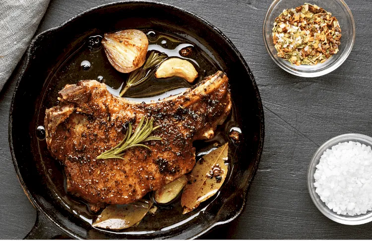

PAN SEARED CAST IRON RIB-EYE

The King of all Steak Cuts
Our signature cast iron ribeye steak is so tender, mouth-watering, and well-marbled, and in my opinion, ribeye is the king of all steak cuts. Seared in oil with the skillet and basted in butter, then finished by melting a garlic herb butter on top.
Tips for Cooking Steaks
If you want your steak to taste delicious and remain tender as possible while cooking, remember to keep these tips in mind;
- Choose a thick cut with good marbling for a moist, flavorful steak.
- Bring the steak to room temperature, coat all sides with kosher salt, and pat dry 40 minutes before cooking for a perfect crispy finish
- Sear on high heat for a delicious crust and a soft, juicy center.
- Finish offcuts thicker than 1/2 inch in the oven.
- For maximum flavor, baste the steak with butter during the final stages of cooking.
- Rest the steak after cooking to ensure the steak retains its juices
- Make the steak sauce in the same pan, so the gelatin thighs from the meat thicken it and add flavor.
INGREDIENTS
Serves 1
- One bone-out ribeye steak, 1.5-In thick
- 1 Tbsp Canola oil to coat pan
- Kosher salt and freshly ground pepper
- Kerrygold Garlic aand Herb butter
- 1 bunch of woody herbs, e.g. rosemary or thyme, whole
COOKING INSTRUCTIONS
- Heat a 10-12 inch cast-iron skillet in a 500˚F oven. Remove the ribeye from the refrigerator, and bring it to room temperature.
- Once the oven reaches 500˚F, remove the skillet from the oven and place it on the stove over a high heat for 5 minutes. Lightly coat the steak with oil and generously season all sides with kosher salt and freshly ground black pepper.
- Instantly place the ribeye in the center of the hot skillet, along with the woody herbs. Sear for 30 seconds; dont move the ribeye. Turn the ribeye over with tongs, and cook for an additional 2 minutes. Turn over the steak again and sear for an additional 30 seconds, remove the woody herbs, then place the skillet straight forward into the oven for 2 minutes.
- Place the herb butter on top of the ribeye. Remove the steak out from skillet, place it on a plate, cover loosely with foil, and rest for 2 minutes as butter melts
Tips: If you prefer medium-cooked steak, add a minute to each turn.